건설재료시험기사 (2007-03-04 기출문제)
1과목: 콘크리트공학
1. 경량골재콘크리트에 대한 설명으로 옳은 것은?
- 내구성이 보통콘크리트보다 크다.
- 열전도율은 보통 콘크리트보다 작다.
- 탄성계수는 보통 콘크리트의 2배 정도이다.
- 건조수축에 의한 변형이 생기지 않는다.
(정답률: 알수없음)

2. 콘크리트 구조물의 중성화현상과 가장 관련이 적은 사항은 어느 것인가?
- 화학법과 모르타르봉법
- 공기중의 탄산가스(CO2)
- 피복두께와 철근의 부식
- 콘크리트중의 수산화칼슘(Ca(OH)2)
(정답률: 알수없음)
3. 골재의 품질이 콘크리트의 배합 또는 성질에 미치는 영향에 대하여 기술한 다음 내용 중 잘못된 것은?
- 실적률이 작은 쇄사를 이용하면, 콘크리트의 워커빌리티가 나빠진다.
- 같은 슬럼프의 콘크리트를 얻어려 하는 경우, 굵은골재 최대치수가 클수록 단위수량은 적게 든다.
- 콘크리트 배합설계시의 단위수량은 골재의 기건상태를 기준으로 한다.
- 잔골재의 조립률 변동이 커지면, 콘크리트의 워커빌리티 변동이 커진다.
(정답률: 알수없음)
4. 프리팩트 콘크리트에 대한 설명으로 옳지 않은 것은?
- 수중 콘크리트에 적합하다.
- 초기 재령에 충분한 압축강도를 발위할 수 있다.
- 주입이 끝날 때까지 유동성을 가져야 한다.
- 콘크리트의 품질을 확인하기가 곤란하고 시공이 적절하지 못할 경우에는 결함을 일으키기 쉽다.
(정답률: 알수없음)
5. 다음 시멘트 중 수화 반응시 발열량이 가장 적은 것은?
- 중용열포틀랜드 시멘트
- 조강포틀랜드 시멘트
- 알루미나 시멘트
- 보통포틀랜드 시멘트
(정답률: 알수없음)
6. 굳지 않은 콘크리트의 성질에 대한 설명으로 잘못된 것은?
- 단위시멘트량이 큰 콘크리트일수록 성형성이 좋다.
- 온도가 높을수록 슬럼프는 감소된다.
- 둥근 입형의 잔골재를 사용한 콘크리트는 모가진 부순 모래를 사용한 것에 비해 워커빌리티가 나쁘다.
- 일반적으로 플라이애시를 사용한 콘크리트는 워커빌리티가 개선된다.
(정답률: 알수없음)
7. 콘크리트의 압축강도 특성에 대한 설명으로 틀린 것은?
- 시멘트의 분말도가 높아지면 초기압축강도는 커진다.
- 물-시멘트비가 일정하면 굵은 골재의 최대치수가 클수록 콘크리트의 강도는 작아진다.
- 일반적으로 부순돌을 사용한 콘크리트의 강도는 강자갈을 사용한 콘크리트의 강도보다 작다.
- 콘크리트의 강도는 일반적으로 표준양생을 한 재령 28일 압축강도를 기준으로 하고 댐콘크리트의 경우는 재령 91일 압축강도를 기준으로 한다.
(정답률: 알수없음)
8. 콘크리트 압축강도 시험에서 하중은 공시체에 충격을 주지 않도록 똑같은 속도로 가하여야 한다. 이 때 하중을 가하는 속도는 압축 응력도의 증가율이 매초 얼마가 되도록 하여야 하는가?
- 0.2~0.1 MPa
- 1.2~2.0 MPa
- 2.0~2.6 MPa
- 2.8~3.4 MPa
(정답률: 알수없음)
9. 프리스트레스트 콘크리트 구조물이 철근콘크리트 구조물보다 유리한 점을 설명한 것 중 옳지 않은 것은?
- 사용하중하에서는 균열이 발생하지 않도록 설계되기때문에 내구성 및 수밀성이 우수하다.
- 콘크리트의 전단면을 유효하게 이용할 수 있어 동일한 하중에 대해 부재 처짐이 작다.
- 충격하중이나 반복하중에 대해 저항력이 크며 부재의 중량을 줄일 수 있어 장대교량에 유리하다.
- 강성이 크기 때문에 변형이 작고, 고온에 대한 저항력이 우수하다.
(정답률: 알수없음)
10. 다음 관리도의 종류에서 정규분포이론이 적용되지 않는 것은?
- P 관리도(불량률 관리도)
- X 관리도(측정값 자체의 관리도)
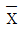
- R 관리도(평균값과 범위의 관리도) - σ 관리도(평균값과 표준편차의 관리도)
- σ 관리도(평균값과 표준편차의 관리도)
(정답률: 알수없음)
11. 콘크리트 알칼리 골재반응에 대한 설명으로 잘못된 것은?
- 알칼리 골재반응이 진행되면 콘크리트 구조물에 균열이 생긴다.
- 콘크리트 중 알칼리 주된 공급원은 골재에 부착된 염분(NaCl)이다.
- 알칼리 골재반응은 포졸란의 사용에 의해 억제된다.
- 알칼리 골재반응이 진행되기 위해서는 반응성골재와 알칼리 및 수분이 필요하다.
(정답률: 알수없음)
12. 콘크리트의 설계기준강도(fck)는 28MPa이고, 공사초기로서 콘크리트 압축강도의 표준편차에 대한 정보가 없을 경우 배합강도(fcr)는 얼마인가?
- 33.5MPa
- 35MPa
- 36.5MPa
- 38MPa
(정답률: 알수없음)
13. 한국산업규격(KS F 2526)에 규정된 콘크리트용 굵은골재의 품질로써 옳지 않은 것은?
- 절건밀도 2.5g/cm3 이상
- 흡수율 5% 이하
- 황산나트륨에 의한 실험을 할 경우, 조작을 5번 반복했을 때 골재의 손실질량 백분율의 한도는 12%이하
- 마모율 40%
(정답률: 알수없음)
14. 프리스트레스트 콘크리트(PSC)의 재료에 대한 설명으로 옳지 않은 것은?
- 굵은골재 최대치수는 보통의 경우 40mm를 표준으로 한다.
- 프리텐션방식에서 프리스트레싱 할 때의 콘크리트의 압축강도는 30MPa 이상이어야 한다.
- PSC그라우트에 사용하는 혼합제는 블리딩 발생이 없는 타입의 사용을 표준으로 한다.
- PSC그라우트의 물-시멘트비는 45% 이하로 한다.
(정답률: 64%)
15. 어떤 콘크리트의 시방배합 결과 단위잔골재량이 617.5kg/m3, 단위굵은골재량이 1031.8kg/m3 있었다. 체가름 시험결과 5mm 체에 남는 잔골재량이 5%, 5mm체를 통과하는 굵은골재량이 4%일 경우 입도보정에 의한 현장배합 단위골재량(kg/m3)으로 옳은 것은?
- 단위잔골재량 606.1, 단위굵은골재량 1043.2
- 단위잔골재량 612.5, 단위굵은골재량 1036.8
- 단위잔골재량 622.5, 단위굵은골재량 1026.8
- 단위잔골재량 627.5, 단위굵은골재량 1021.8
(정답률: 60%)
16. 콘크리트 배합설계에 관한 설명으로 틀린 것은?
- 단위시멘트량은 물-시멘트비에서 결정한다.
- 굵은골재의 최대치수는 부재 최소치수의 1/5, 피복두께 및 철근의 최소 순간격의 3/4을 초과해서는 안된다.
- 콘크리트의 슬럼프는 운반, 치기, 다짐 등의 작업이 알맞은 범위에서 될 수 있는 대로 작은 값을 정한다.
- AE제 또는 AE감수제 등을 사용한 콘크리트의 공기량은 콘크리트 용적의 2-4%를 표준으로 한다.
(정답률: 알수없음)
17. 다음 중 수중콘크리트 치기 및 양생방법으로 잘못된 것은?
- 콘크리트 타성에서 완전히 물막이를 할 수 없는 경우, 유속은 1초간 1cm 이하로 하는 것이 좋다.
- 콘크리트를 수중에 낙하시키면 재료분리가 일어나므로 콘크리트는 수중에 낙하시켜서는 안된다.
- 콘크리트가 경화될 때까지 물의 유동을 방지하여야 한다.
- 한 구획의 콘크리트 타설을 완료한 후 레이턴스를 모두 제거하고 다시 타설하여야 한다.
(정답률: 55%)
18. 거푸집의 높이가 높을 경우, 재료분리를 막고 상부의 철근 또는 거푸집에 콘크리트가 부착하여 경화하는 것을 방지하기 위해 거푸집에 투입구를 설치하거나, 연직슈트 또는 펌프배관의 배출구를 타설면 가까운 곳까지 내려서 콘크리트를 타설해야 한다. 이 경우 슈트, 펌프배관, 버킷, 호피등의 배출구와 타설 먼까지의 높이는 최대 몇 m 이하를 원칙으로 하는가?
- 0.5m
- 1.0m
- 1.5m
- 2.0m
(정답률: 알수없음)
19. 다음 중 매스콘크리트의 온도제어 양생방법으로 가장 유효한 것은?
- 담수양생
- 증기양생
- 파이프쿨링
- 막양생
(정답률: 알수없음)
20. fck=20MPa인 보통 콘크리트의 탄성계수는 몇 MPa인가? (단, 보통골재를 사용한 콘크리트(단위질량 2.3ton/m3)의 경우)
- 2.0×104
- 2.1×104
- 2.3×104
- 3.2×104
(정답률: 알수없음)
2과목: 건설시공 및 관리
21. 다음은 성토에 사용되는 흙의 조건에 관한 설명이다. 옳지 않은 것은?
- 다루기가 쉬워야 한다.
- 충분한 전단강도를 가져야 한다.
- 도로성토에서는 투수성이 양호해야 한다.
- 가급적 점토성분을 많이 포함하고 자갈 및 왕모래 등은 적어야 한다.
(정답률: 알수없음)
22. 옹벽 대신 이용하는 돌쌓기 공사 중 뒤채움에 ×104를 이용하고, 줄눈에 모르타르를 사용하는 2m 이상의 돌쌓기 방법은 무엇인가?
- 메쌓기
- 찰쌓기
- 견치돌쌓기
- 줄쌓기
(정답률: 알수없음)
23. 품질, 공정, 원가의 일반적인 관계에서 그 내용을 기술한 것 중 옳은 것은?
- 공정을 늦게 할수록 원가는 싸지고, 품질도 향상된다.
- 공정을 빨리하면 원가는 점차 떨어지나 계속하여 급속작업을 하면 원가는 높아진다.
- 품질이 좋을수록 원가는 낮아진다.
- 공정이 빠를수록 품질은 향상되고, 원가도 높아진다.
(정답률: 알수없음)
24. 어스 앵커 공법의 설명 중 옳지 않은 것은?
- 영구 구조물에도 사용하나 주로 가설구조물의 고정에 많이 사용한다.
- 앵커를 정착하는 방법은 시멘트 밀크 또는 모르터를 가압으로 주입하거나 앵커 코어 동물 등을 박아 넣는다.
- 앵커 케이블을 주로 철근을 사용한다.
- 앵커의 정착대상 지반을 토사층으로 가정하고 앵커케이블을 사용하여 긴장력을 주어 구조물을 장착하는 공법이다.
(정답률: 알수없음)
25. 유효다짐폭 3m의 10t 머캐덤 로울러(macadam roller) 1대를 사용하여 성토의 다짐을 시행할 때 평균작업속도 2km/hr, 다짐횟수를 10회, 작업효율 0.6으로 하면 1시간당 작업량은 약 얼마인가? (단, 토량환산계수는 0.8로 한다.)
- 57.6m3
- 76.2m3
- 85.4m3
- 92.7m3
(정답률: 알수없음)
26. 관암거의 직경이 20cm, 유속이 0.6/sec, 암거길이가 300m일 때 원활한 배수를 위한 암거낙치를 구하면? (단, Giesler의 공식을 사용하시오)
- 0.86m
- 1.35m
- 1.84m
- 2.24m
(정답률: 알수없음)
27. 전장비 중량 22t, 접지장 270cm, 캐터필러폭 55cm, 캐터피러의 중심거리가 2m일 때 불도저의 접지압은 얼마인가?
- 0.37kg/cm2
- 0.74kg/cm2
- 1.11kg/cm2
- 2.96kg/cm2
(정답률: 알수없음)
28. T.B.M 공법에 대한 설명으로 옳은 것은?
- 무진동 화약을 사용하는 방법이다.
- cutter에 의하여 암석을 암쇄 또는 굴착하여 나가는 굴착공법이다.
- 암층의 변화에 대하여 적응하기가 쉽다.
- 여굴이 많아질 우려가 있다.
(정답률: 알수없음)
29. 아래 표에서 설명하는 굴착장비의 명칭은?
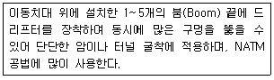
- Stoper
- Jumbo drill
- Rock drill
- Sinker
(정답률: 알수없음)
30. 중력댐의 시공 후 댐내부에 설치하는 검사링의 시공목적으로 옳지 않은 것은?
- 콘크리트 내부의 균열 및 수축검사
- 온도측정
- 누수검사
- 암반이나 구조물에 작용하는 양압력을 줄이기 위하여
(정답률: 50%)
31. 아스팔트 포장의 끝손질 다짐(완성전압)에 가장 적합한 고울러(Roller)는 어느 것인가?
- 탠덤 로울러(Tandem roller)
- 머캐덤 로울러(Macadam roller)
- 타이어 로울러(Tire roller)
- 탬핑 로울러(Tamping roller)
(정답률: 알수없음)
32. 다음 중 비계를 이용하지 않는 감트러스교의 가설공법잉 아닌 것은?
- 새들(saddle)공법
- 캔틸레버(cantilever)식 공법
- 케이블(cable)식 공법
- 부선(pontoon)식 공법
(정답률: 37%)
33. 유토곡선(mass curve)의 성질에 관한 설명 중 옳지 않은 것은?
- 유토곡선의 최대값, 최소값을 표시하는 점은 절토와 성토의 경계를 말한다.
- 유토곡선의 상승부분은 성토, 하강부분은 절토를 의미한다.
- 유토곡선이 기선아래에서 종결된 때에는 토량이 부족하고 기선위에서 종결될 때에는 토량이 남는다.
- 기선상에서의 토량은 0이다.
(정답률: 알수없음)
34. PERT 공정관리기법에 관한 설명 중 옳지 않은 것은?
- PERT 기법에서는 시간견적을 3점법으로 확률계산한다.
- PERT 기법의 중심관리는 작업단계(event)이다.
- PERT 기법은 비용문제를 포함한 반복사업에 이용된다.
- PERT 기법은 신규사업 및 경험이 없는 사업에 적용한다.
(정답률: 알수없음)
35. 동결지수가 400℃ㆍday이고 정수 C값이 2.8일 때 이 지역의 동결 깊이는? (단, 데라다의 공식을 이용한다.)
- 56cm
- 60cm
- 66cm
- 70cm
(정답률: 알수없음)
36. 37.800m3(완성된 토량)의 성토를 하는데 유용토가 30.000m3(느슨한 토량)이 있다. 이 때 부족한 토량은 본바닥 토량으로 얼마인가? (단, 흙의 종류는 사질토이고 토량의 변화율은 L=1.25, C=0.90이다.)
- 13.800m3
- 16.200m3
- 18.000m3
- 22.000m3
(정답률: 알수없음)
37. 다음은 아스팔트 포장의 단면도이다. 상단부터 차례로 맞게 기술한 것은?
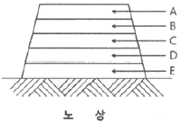
- 차단층, 중간층, 표층, 기층, 보조기층
- 표층, 기층, 중간층, 보조기층, 차단층
- 표층, 중간층, 차단층, 기층, 보조기층
- 표층, 중간층, 기층 보조기층, 차단층
(정답률: 알수없음)
38. 기계의 지반보다 낮은 부분을 굴착하는 기계로서 비탈면절취, 끝손질, 옆도랑 파기 및 기초굴착에 유용하게 사용되며 수중굴착도 가능한 장비는?
- 드래그라인
- 백호우
- 로우더
- 그레이더
(정답률: 알수없음)
39. 흙의 동상을 방지하기 위한 방법으로서 적당하지 않은 것은?
- 지하수위를 상승시켜서 흐름을 원활하게 한다.
- 모관수의 상승을 차단할 목적으로 된 층은 지하수위보다 높은 곳에 설치한다.
- 표면의 흙을 화학약품으로 처리한다.
- 흙 속에 단열 재료를 매입한다.
(정답률: 알수없음)
40. 공기 케이슨 공법은 수심 10~40m 정도에 사용하고 그 이하 및 이상은 정통(井筒)이 이용된다. 공기 케이슨 공법에 관한 설명 중 옳지 않은 것은?
- 소규모 공사 또는 심도가 얕은 곳에는 비경제적이다.
- 배수를 하면서 시공하므로 지하수위 변화를 주어 인접지반에 침하를 일으킨다.
- 노동조건의 제약을 받기 때문에 노무비가 과대하다.
- 토질을 확인할 수 있고 정확한 지지력 측정이 가능하다.
(정답률: 알수없음)
3과목: 건설재료 및 시험
41. 잔골재의 내구성을 측정하기 위해서 황산나트륨에 의한 안정성 시험을 할 경우 조작을 5번 반복 했을 때의 잔골재의 손실질량 백분율의 한도는 일반적으로 얼마인가?
- 20%
- 12%
- 10%
- 5%
(정답률: 알수없음)
42. 다음 설명 중 틀린 것은?
- 폭약 또는 화약을 폭발시키기 위해 기폭약 또는 첨장약을 관체에 장전한 것을 뇌관이라고 한다.
- 흑색화약을 중심으로 해서 그 주위를 미사, 종이, 테이프 등으로 피복한 것을 도화선이라고 한다.
- 대폭파 또는 수중폭파를 동시에 실시하기 위해 뇌관대신 사용하는 것을 도화선이라고 한다.
- TNT등을 심약으로 하고 마사, 면사 등으로 싸서 방습포장하는 것을 도폭선이라고 한다.
(정답률: 알수없음)
43. 어떤 현장에서 프리텐션 방식의 원심력 PC말뚝을 A사에서 100개, B사에서 400개를 반입하였다. 건설품질시험기준에 의한 최소 시험횟수는?
- 2회
- 3회
- 4회
- 5회
(정답률: 알수없음)
44. 다음 중 컷백 아스팔트(Cut back Asphalt)에 대한 설명으로 옳은 것은?
- 비교적 연한 스트레이트 아스팔트에 적당한 휘발성 용제를 가하여 점도를 저하시켜 유동성을 좋게 한 것
- 아스팔트를 고온 가루로 만든 다음 에멀션화제를 사용하여 물에 분산시켜 만든 것
- 고체상태의 아스팔트를 인화점 이하의 온도로 가열하여 적당한 유동성을 갖도록 녹인 것
- 액체 상태의 아스팔트에 모래를 섞은 것
(정답률: 알수없음)
45. 일반 콘크리트용 잔골재의 표준조립률로서 다음 중 가장 적당한 것은?
- 2.3~3.1
- 3.1~5.7
- 6~8
- 8 이상
(정답률: 알수없음)
46. 다음은 아스팔트 침입도 시험에 대한 설명이다. 괄호안의 값으로 틀린 것은?
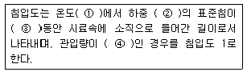
- ① 25℃
- ② 200g
- ③ 5초
- ④ 0.1mm
(정답률: 알수없음)
47. 건설재료로서 플라스틱(Plastics)재료에 대한 설명으로 옳지 못한 것은?
- 경량으로 고강도 재료이다.
- 내수성, 내마모성이 콘크리트에 비하여 극히 우수하다.
- 보통 인장강도가 압축강도보다 크고 목재와 비교할 때 갈라짐과 강도의 방향성이 없는 편이다.
- 직사 일광에 의한 노화작용이 빠르다.
(정답률: 알수없음)
48. AE제에 의해 콘크리트에 연행된 공기가 콘크리트의 성질에 미치는 영향에 대한 설명 중 틀린 것은?
- 연행된 공기량이 증가하면 콘크리트의 압축강도는 감소한다.
- 연행된 공기량에 의해 콘크리트와 철근의 부착강도가 감소한다.
- 연행된 공기량에 의해 콘크리트의 동결융해에 대한 저항성이 감소한다.
- 연행된 공기량에 의해 콘크리트의 블리딩이 감소한다.
(정답률: 알수없음)
49. 다음 콘크리트용 혼화재료에 대한 설명 중 틀린 것은?
- 감수제는 시멘트 입자를 분산 시켜 콘크리트의 단위수량을 감소시키는 작용을 한다.
- 촉진제는 시멘트의 수화작용을 촉진하는 혼화제로서 보통 나프탈린 설폰산염을 많이 사용한다.
- 지연제는 여름철에 레미콘의 슬럼프 손실 및 콜드 조인트의 방지 등에 효과가 있다.
- 급결제는 시멘트의 응결시간을 촉진하기 위하여 사용하며 숏크리트, 물막이 공법 등에 사용한다.
(정답률: 알수없음)
50. 다음 중 고로슬래그 시멘트를 사용한 콘크리트의 성질에 대한 설명이 틀린 것은?
- 초기 수화열을 감소시켜 매스 콘크리트의 온도상승 억제에 효과가 있다.
- 현장의 거푸집 회전율이 보통 포틀랜드시멘트를 사용한 경우보다 높다.
- 해양 콘크리트 구조물에 고로슬래그 시멘트를 사용할 경우 철근 부식 억제에 효과가 있다.
- 알칼리-실리카 반응의 억제에 효과가 있다.
(정답률: 알수없음)
51. 발화점이 295℃정도이며, 충격에 둔감하고, 폭발위력이 Dynamite보다 우수하며 흑색화약의 4배에 달하는 폭약은 어느 것인가?
- TNR
- 니트로 글리세린
- Slurry 폭약
- 칼릿(Carlit)
(정답률: 알수없음)
52. 보통포틀랜드시멘트가 28일 후에 낼 수 있는 소요강도를 24시간만에 낼 수 있게 만든 시멘트는?
- 팽창시멘트
- 알루미나 시멘트
- 초속경 시멘트
- 조강포틀랜드 시멘트
(정답률: 알수없음)
53. 골재의 취급과 저정시 주의해야 할 사항으로 틀린 것은?
- 잔골재, 굵은골재 및 종류, 입도가 다른 골재는 각각 구분하여 별도로저장한다.
- 골재의 저장설비는 적당한 배수설비를 설치하고 그 용량을 검토하여 표면수가 일정한 골재의 사용이 가능하도록 한다.
- 골재의 표면수는 굵은 골재는 건조상태로, 잔골재는 습윤상태로 저장하는 것이 좋다.
- 골재는 빙설의 혼입방지, 동결방지를 위한 적당한 시설을 갖추어 저장해야 한다.
(정답률: 알수없음)
54. 목재의 함수율을 측정하기 위해 시험을 실시한 결과 다음과 같은 값을 얻었다. 함수율은 얼마인가?
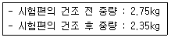
- 15%
- 17%
- 19%
- 21%
(정답률: 알수없음)
55. 다음은 비철금속 재료 중 어떤 것에 대한 설명인가?
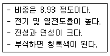
- 알루미늄
- 니켈
- 구리
- 주석
(정답률: 알수없음)
56. 다음 석재 사용시 주의사항에 대한 설명 중 틀린 것은?
- 석재는 예각부가 생기면 부서지기 쉬우므로 표면에 심한 요철 부분이 없어야 한다.
- 석재는 크기가 크면 취급상 불편하기 때문에 최대제작을 1m3 정도로 한정ㄷ하여 사용하는 것이 좋다
- 구조재로 석재를 사용할 경우 휨응력 부재로 사용함이 바람직하다.
- 석재를 장시간 보존할 경우 석재표면을 도포하여 내수성 및 내구성에 주의하여야 한다.
(정답률: 알수없음)
57. 포틀랜트시멘트에 관한 설명 중 틀린 것은?
- 포틀랜드시멘트에는 보통포틀랜드시멘트, 조강포틀랜드시멘트, 중용열포틀랜드시멘트, 저열포틀랜드시멘트등이 있다.
- 주강포틀랜드시멘트는 C3의 함유량을 높이고 C2S를 줄이는 동시에 온도를 높여 분말도를 높게하여 조강성을 준 것이다.
- 중용열포틀랜드시멘트는 조기감도는 작으나 수화열이 작고 내구성이 좋아 댐과 같은 매시브한 콘크리트에 사용한다.
- 백색포틀랜드시멘트는 시멘트 원료 중 점토에서 실리카설분을 제거하여 백색으로 만들어지며 주로 건축물의 미장, 장식용, 채광용 등에 쓰인다.
(정답률: 알수없음)
58. 건설공사 품질시험기준 중 흙댐의 중심점토에 대한 함수량시험은 토량이 3,000m3이면 몇 회를 하여야 하는가?
- 3회
- 5회
- 10회
- 1회
(정답률: 알수없음)
59. 다음은 아스팔트의 물리적 성질이다. 잘못된 것은?
- 아스팔트의 비중은 일반적으로 약 1.0~1.1 정도이다.
- 아스팔트의 침입도는 온도 상승에 따라 감소한다.
- 아스팔트의 인화점은 대체로 250~320℃의 범위에 있다.
- 아스팔트의 열팽창계수는 상온 200℃까지 대개 6.0×10-4/℃ 정도이다.
(정답률: 82%)
60. 포졸란을 사용한 콘크리트의 특징으로 옳지 않은 것은?
- 발열량이 적어 장기강도가 적다.
- 워커빌리티를 개선시키고 재료의 분리가 작다.
- 내구성 및 수밀성이 크다.
- 해수에 대한 화학적 저항성이 크다.
(정답률: 알수없음)
4과목: 토질 및 기초
61. 흙의 함수비 측정시험을 하기 위하여 먼저 용기의 무게를 잰 결과 10g이었다. 시료를 용기에 넣은 후 무게를 측정하니 40g, 그대로 건조시킨 후 무게는 30g 이었다. 이 흙의 함수비는?
- 25%
- 30%
- 50%
- 75%
(정답률: 알수없음)
62. 점토층의 두께 5m, 간극비 1.4, 액성한계 50%이고 점토층 위의 유효상재 압력이 10t/m2에서 14t/m2으로 증가할 때의 침하량은? (단, 압축지수는 흐트러지지 않은 시료에 대한 Terzaghi & Peck의 경험식을 사용하여 구한다.)
- 8cm
- 11cm
- 24cm
- 36cm
(정답률: 55%)
63. 아래 그림에서 지표면에서 깊이 6m에서의 연직응력(σv)과 수평응력(σh)의 크기를 구하면? (단, 토압계수는 0.6이다.)
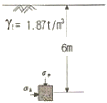
- σv=12.34t/m2, σh=7.4t/m2
- σv=8.73t/m2, σh=5.24t/m2
- σv=11.22t/m2, σh=6.73t/m2
- σv=9.52t/m2, σh=5.71t/m2
(정답률: 알수없음)
64. 높이 15cm, 지름 10cm인 모래시료에 정수위 투수 시험한 결과 정수두 30cm로 하여 10초간의 유출량이 62.8cm3였다. 이 시료의 투수계수는?
- 8×10-2cm/sec
- 8×10-3cm/sec
- 4×10-2cm/sec
- 4×10-3cm/sec
(정답률: 알수없음)
65. 흙의 다짐에 관한 설명 중 옳지 않은 것은?
- 조립토는 세립토보다 최적함수비가 작다.
- 최대 건조단위중량이 큰 흙일수록 최적함수비는 작은 것이 보통이다.
- 점성토 지반을 다질 때는 진동 로울러로 다지는 것이 유리하다.
- 일반적으로 다짐 에너지를 크게 할수록 최대 건조단위중량은 커지고 최적함수비는 줄어든다.
(정답률: 알수없음)
66. 그림과 같이 지하수위가 지표와 일치한 연약점토 지반위에 양질의 흙으로 매립 성토할 때 매립이 끝난 매립후 지표로부터 5m 깊이에서의 과잉 간극수압은 약 얼마인가?
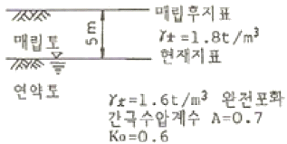
- 9.0t/m2
- 7.9t/m2
- 5.4t/m2
- 3.4t/m2
(정답률: 알수없음)
67. 다음은 흙의 강도에 관한 설명이다. 다음 설명 중 옳지 않은 것은?
- 모래는 점토보다 내부마찰각이 크다.
- 일축압축시험 방법은 모래에 적합한 방법이다.
- 연약점토 지반의 현장시험에는 Vane전단시험이 많이 이용된다.
- 예민비란 교란되지 않은 공시체의 일축압축강도에 대한 다시 반죽한 공시체의 일축압축강도의 비를 말한다.
(정답률: 46%)
68. 흙의 다짐에 있어 앰머의 중량이 2.5kg, 낙하고 30cm, 3층으로 각층 다짐회수가 25회 일 때 다짐에너지는? (단, 올드의 체적은 1000cm3이다.)
- 5.63kgㆍcm/cm3
- 5.96kgㆍcm/cm3
- 10.45kgㆍcm/cm3
- 0.66kgㆍcm/cm3
(정답률: 알수없음)
69. 점토지반에서 연직방향 압밀계수 Cv는 수평방향 압밀계수 Ch보다 작지만 샌드 드레인 공법에서는 설계시 보통 Cv=Ch로 본다. 그 이유는?
- sand mat를 깔았기 때문에
- samd 말뚝 타입시 주변의 지반이 교란되기 때문에
- 얇은 모래층이 점토지반에 존재하고 있기 때문에
- 압밀계산결과에 전혀 차가 없기 때문에
(정답률: 알수없음)
70. 다음 그림과 같이 점토질 지반에 연속기초가 설치되어 있다. Terzaghi 공식에 의한 이 기초의 허용 지지력 qa는 얼마인가? (단, ø=0이며, Nc=5.14, Nq=1.0, Nγ=0, 안전율 Fs=3이다.)
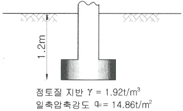
- 6.4t/m2
- 13.5t/m2
- 18.5t/m2
- 40.49t/m2
(정답률: 알수없음)
71. 두께 1m인 흙의 간극에 물이 흐른다. a-a면과 b-b면에 피에조미터를 세웠을 때 그 수두차가 0.1m 였다면 다음 중 가장 올바른 설명은?
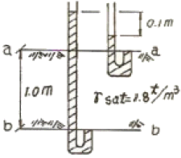
- 물은 a-a면에서 b-b면으로 흐르는데 그 침투압을 1t/m2이다.
- 물은 b-b면에서 a-a면으로 흐르는데 그 침투압을 1t/m2이다.
- 물은 a-a면에서 b-b면으로 흐르는데 그 침투압을 1t/m2이다.
- 물은 b-b면에서 a-a면으로 흐르는데 그 침투압을 1t/m2이다.
(정답률: 알수없음)
72. 연약지반 처리공법 중 sand drain 공법에서 연직과 방사선 방향을 고려한 평균 압밀도 U는? (단, Uv=0.20, UR=0.71이다.)
- 0.573
- 0.697
- 0.712
- 0.768
(정답률: 47%)
73. 비중이 2.70이며 함수비가 25%인 어느 현장 사질토 5m3무게가 8.0t이었다. 이 사질토를 최대로 조밀하게 다졌을 때와 최대로 느슨한 상태의 간극비가 각각 0.8과 1.20이었다. 이 현장 모래의 상대밀도는?
- 22.5%
- 32.5%
- 42.5%
- 52.5%
(정답률: 알수없음)
74. 단동식 증기 해머로 말뚝을 박았다. 해머의 무게 2.5 ton, 낙하고 3m, 타격당 말뚝의 평균 관입량 1cm, 안전율 6일 때 Engineering-News 공식으로 허용지지력을 구하면 얼마인가?
- 250 ton
- 200 ton
- 100 ton
- 50 ton
(정답률: 알수없음)
75. 그림과 같은 사면에서 깊이 6m 위치에서 발생하는 단위폭당 전단응력은 얼마인가?
- 5.32 t/m2
- 2.34 t/m2
- 4.⑤ t/m2
- 2.04 t/m2
(정답률: 알수없음)
76. 다음 그림에서 액성지수(LI)가 0＜ LI＜1인 구간은? (단, v : 흙의 부피, w: 함수비(%))
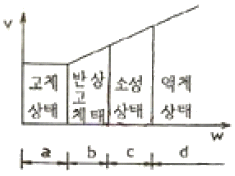
- a
- b
- c
- d
(정답률: 알수없음)
77. 점착력이 0.1kg/cm2, 내부마찰각이 30°인 흙에 수직응력 20kg/cm2을 가할 경우 전단응력은?
- 20.1kg/cm2
- 3.76kg/cm2
- 1.16kg/cm2
- 11.65kg/cm2
(정답률: 알수없음)
78. 그림과 같은 옹벽에 작용하는 진주동토압은 얼마인가? (단, 흙의 단위중량 γ=1.7t/m3, 내부마착각 ø=30°, 점착력 C=0)
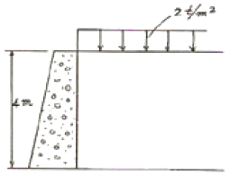
- 3.6t/m
- 4.53t/m
- 7.2t/m
- 12.47t/m
(정답률: 알수없음)
79. 모래 치환법에 의한 현장 흙의 밀도 시험에서 모래는 무엇을 구하기 위하여 쓰이는가?
- 시험구멍에서 파낸 흙의 중량
- 시험구멍의 체적
- 시험구멍에서 파낸 흙의 함수상태
- 시험구멍의 밑면부의 지지력
(정답률: 알수없음)
80. 문제 오류로 복원중입니다. 정확한 내용을 아시는 분께서는 오류신고를 통하여 내용 작성 부탁드립니다. 정답은 2번입니다.
- 복원중 (정확한 보기 내용을 아시는분께서는 오류 신고를 통하여 내용 작성부탁 드립니다.)
- 복원중 (정확한 보기 내용을 아시는분께서는 오류 신고를 통하여 내용 작성부탁 드립니다.)
- 복원중 (정확한 보기 내용을 아시는분께서는 오류 신고를 통하여 내용 작성부탁 드립니다.)
- 복원중 (정확한 보기 내용을 아시는분께서는 오류 신고를 통하여 내용 작성부탁 드립니다.)
(정답률: 알수없음)